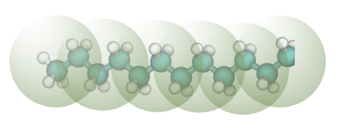

Dodecane
Dodecane is a first case study involving bonding, and its interactions with water is an example of coarse graining an immiscible molecule pair.
This case study uses the following coarse-grained mapping:

And it assumes that water interactions have already been derived following previous case study.
See the repository for all the files. The bulk dodecane notebook introduces how to coarse grain with bonded interactions. The key new features that are used involve bonding:
filter_aa_bond = sim.atomselect.PolyFilter([atom_type_C2,atom_type_C2], Bonded=True)
p_bond = sim.potential.Bond(sys, Filter = filter_aa_bond, Dist0 = bondl, FConst = bondf, Label="Bonded")
sys.ForceField.extend([p_bond])
and adding a squared end-to-end distance constraint:
dist2 = sim.measure.distang.Distance2(Sys0,sim.atomselect.PolyFilter(Filters=[Sys0.World.SiteTypes[0],Sys0.World.SiteTypes[5]],Intra=True), Name='tail_ree2')
Sys0.Measures.append(dist2)
dist2_target = 1.01
sim.srel.penalty.VVerbose = False
Lastly, the dodecane-water notebook shows coarse graining from a segregated dodecane-water system and appropriate barostatting. The barostat setting is set in the settings_dodecane-water.yaml file to barostat only in the z-direction (normal to the interface). If you want to do this manually, you need to use:
sys.PresSet = p_target
sys.PresAx = 2 #: for z-axis